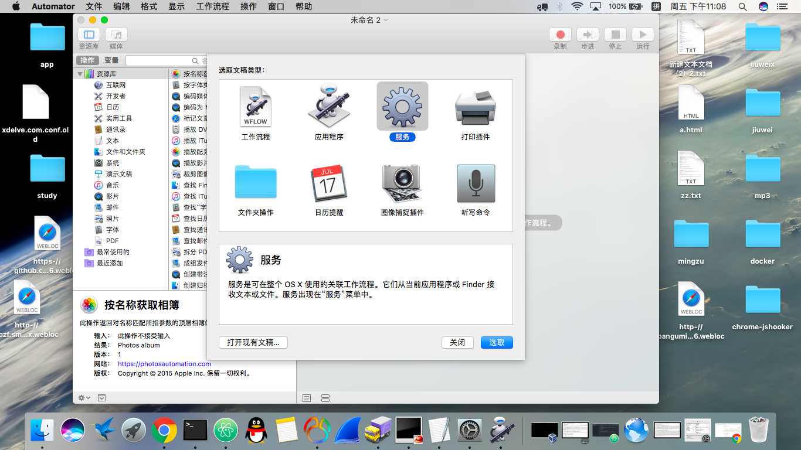
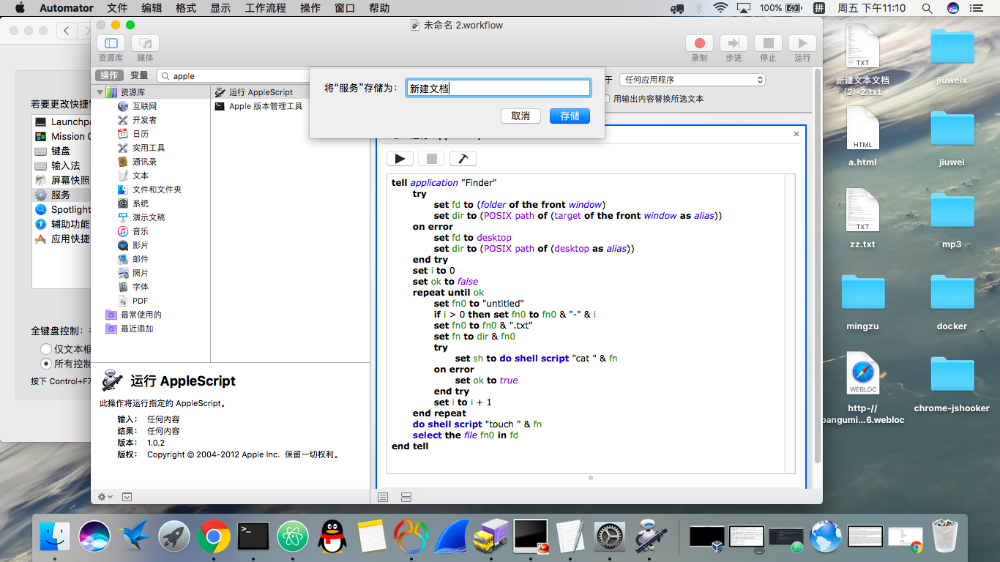
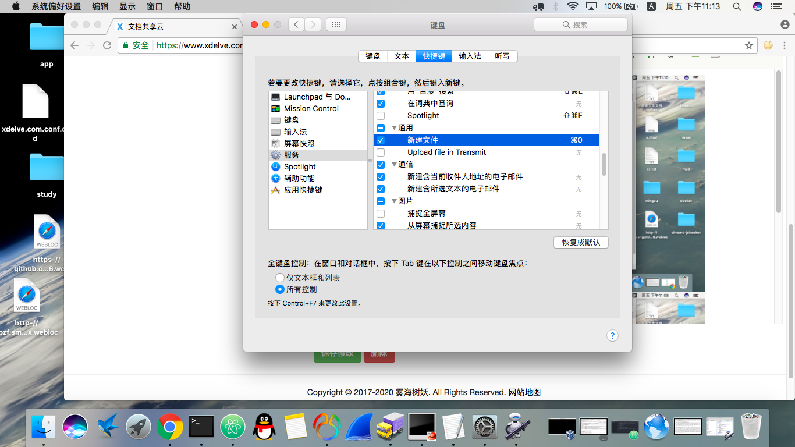

由于mac系统没有自带新建文件的功能，以往我都是先打开一个文本编辑器，再把文件另存为目标位置。今天我尝试用applescript和系统快捷键实现一键新建的操作，省的每次都要这么麻烦。
首先打开Automator，选择新建服务：

搜索applescript，选取之后右边会出现代码输入框，把下面的代码贴入输入框：
tell application "Finder"
try
set fd to (folder of the front window)
set dir to (POSIX path of (target of the front window as alias))
on error
set fd to desktop
set dir to (POSIX path of (desktop as alias))
end try
set i to 0
set ok to false
repeat until ok
set fn0 to "untitled"
if i > 0 then set fn0 to fn0 & "-" & i
set fn0 to fn0 & ".txt"
set fn to dir & fn0
try
set sh to do shell script "cat " & fn
on error
set ok to true
end try
set i to i + 1
end repeat
do shell script "touch " & fn
select the file fn0 in fd
end tell代码输入框上面的服务收到这一行，切换为没有输入，位于选择Finder。
保存为 新建文档。

打开系统偏好设置->键盘->快捷键设置，找到前面写的新建文档。把快捷键设为 Command+0

之后就可以在任何finder窗口（或桌面）用command+0新建文件了。
相关文档
随便看看